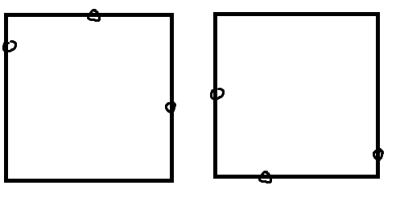
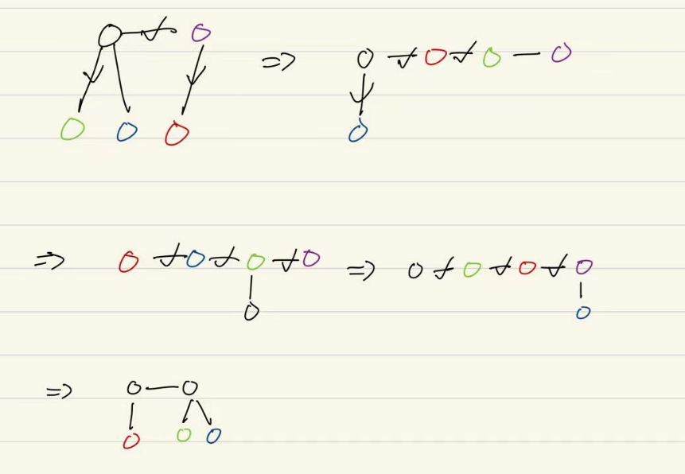
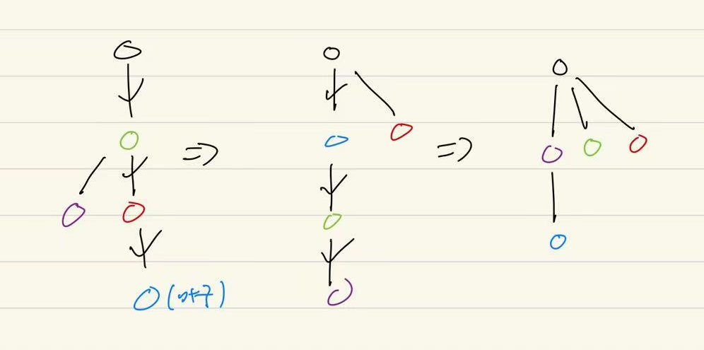

Petrozavodsk Summer 2024 Day 2 赛后小结
比赛链接：https://qoj.ac/contest/1806
开局队友秒 B ，我秒 F 和 I，然后队友秒 C 。
然后三个人开始幽默，做个 G ，都已经转成切比雪夫了，做了好久才发现充要条件，确实有点幽默了，过的时候已经 1:15 了。
然后我想了想 M ，半个小时后过了。然后接下来和队长一起想 L ，想到 3:20 才过，期间我一直在对值域做同余最短路，对着 $2500^2$ 疯狂的哈气，不知道如何是好，中间甚至还提出了错误做法，占用队伍半小时机时，罪大恶疾（肯定有人会问了，为什么队长和你讨论还会放你去写错误做法，事实上，由于我的幽默表达能力，队友经常听不懂我的做法，久而久之干脆不听了，我有做法就让我上，再加上队长当天打麻将熬夜，精神状态不好，估计也懒得管这事）。
而后和队长讨论 J ，就在我阿巴半天后，才发现他们会了，只是没机时写，尴尬。后面队友写 E 写到崩溃，我上去写 J ，过了，剩十几分钟，队长让我随便写个 A 的做法，我一方面觉得没有意义，另外一方面我觉得我写不出来，和队长争辩，于是队长开始表演赛（腾讯会议共享屏幕），表演了十几分钟速写 100 行左右的暴力代码，甚至最后 T 了不是 WA 了，恐怖如斯，让我大受震撼，黑子说话。
事实上，我之前在这队伍一直有个不满，随着这场表演赛算是解开了一半？具体来说：
我不太想成为专职的代码手，我认为除了每个人专门负责的板块，比如 LCT 是队友，几何队长，字符串我之类的以外，很多题目应该是谁擅长谁写或者谁想出来谁写，我一直不满队长让我去赤他想出来的石，毕竟我是来打算法竞赛，来寻乐子的，不是来当代码苦力的。而这个不满在队长说出我果然就不应该上机的话后达到的顶峰。
当然，这个不满并没有和队长说，因为我觉得说了也没用，还有可能激起矛盾，虽然我觉得这不算很自私的要求，但确实不符合队长的价值观。实际上队长在之前的队伍是担任类似代码手的职责的，他的前队长也是没有上机过的，加上他给我留下的印象是对比赛荣誉很看重，换句话说，他应该是团队至上，而我们队伍确实在队长上机红温后会很容易陷入没人指挥的局面，所以某种角度上他不上机对团队而言确实是有道理的。
所以如果我去和他商讨，大概率会起纷争，就算他后面让了我，在后面的比赛中他要做决策之前都要考虑一下我会不会因为这个决策应激，我感觉这相当的怪；而且可能还会影响友谊，所以就一直没说。我也尽量让这种不满不干扰我训练时的状态（比赛时显然不会，谁比赛时想这东西）。当然，队长知道我的博客，可能以后会看到，但是他看到的时候逆命已经彻底寄了，这种不满也随着 ACM 的回忆随风而去了，应该也就没什么影响了。
（当然，可能有人会问，为什么要把这玩意写博客里，不写在自己日记里，要写在博客里，实际上这个没什么人知道的博客网站也承载了我一部分日记的功能，跟 ACM 有关的部分就顺手写在这里了，而且这应该算不上什么很大的雷点吧？应该。而且另一方面，如果有人看到了，有机会的话，我或许能够有机会在未来和别人聊聊他们对这件事情的看法，看看如果是他们，会如何处理这件事情）
但为什么说解开了一半呢？那当然是给队长精彩的代码表演震撼到了，那快速的代码水平，清晰的思路让我羡慕，如果我能练到这个水平就好了，最该锻炼的人是你呀。所以也就释怀了，写就写吧，顺便锻炼一下代码水平。那为什么说是一半呢？小老哥真的是，那如果我代码水平真的练上去了，那不还是会有不满吗，说到底这种想法只是基于当下环境的抉择，治标不治本啊，不过逆命的最后一场比赛也即将来到了，练上去的可能性有，但练上去不太可能。
为了锻炼我的代码水平，我需要做三件事情：
- 写代码的时候全神贯注，我感觉我写代码的时候大脑其实处于一种类似放空的状态，敲代码有一种肌肉记忆的美，这种固然可以，也轻松，但是问题就是我感觉这样敲会慢，经常卡，而且进步速度十分缓慢，敲很久代码都不见得会有速度上的提升。更进一步的，敲代码时全神贯注会对代码会有一个整体性的把握，可以把大脑改造成更会写代码的样子？大概。
- 平时思考一下能有什么代码习惯或者工具能够提升代码速度。比如学习一些快捷键，学习 Vim ，或者善用 STL ，学习一下别人怎么敲代码的，思考或者学习一下在敲代码的时候应该想什么，更进一步的，可以把自己敲代码的过程录下来，然后回放看一下为什么会卡，争取把可以提升的点全部提升上去（比如我一个很容易卡的点就是变量命名，但我感觉这个首先得提升英语，所以不急）。
- 多写屎题，且边写边思考，只知道赤是没有用的，要动脑子的赤。
F
做法
显然，交换 $x$ 和 $x+1$ 只会影响 $x+1$ 这个前缀状态，所以显然下界是需要改变的真前缀个数，而这显然能构造出来，就做完了。
时间复杂度：$O(n)$
1 |
|
I
做法
显然最优状态下 $x$ 一定可以等于 $2^k-1$ ，然后枚举一下就行了。
时间复杂度：$O(n\log{V})$
1 |
|
G
tag：数据结构
做法
对于这种曼哈顿距离的题目，如果曼哈顿距离想不出来，可以先试试转成切比雪夫再想想。
这里显然转成切比雪夫后就是问三点能不能在一个正方形的边上，那充要条件自然是 $x_1
证明的话：不妨设三点中两两 $x$ 的差的绝对值或者 $y$ 的差的绝对值最大的为 $|x_{1}-x_{2}|$ ，那么有 $x_{1}\le x_{2}\le x_{3}$ 或者反过来，那么显然只要 $(x_3,y_3)$ 不是在两点为对角的长方形里面，就一定存在这样的正方形。

这种三位偏序是简单的，做两遍就行了。
时间复杂度：$O(n\log{n})$
1 |
|
当然，我们当时不是这么想出这个条件的，当时我是想，这个中心点和三个点的切比雪夫距离一定有至少两个取到 $x$ 或者 $y$ ，而为了方便，我作出了三点中两两 $x$ 的差的绝对值或者 $y$ 的差的绝对值最大的为 $|x_{1}-x_{2}|$ 的假设（方便中间的点能获得尽可能大的空间，使得对 $(x_1,y_1),(x_2,y_2)$ 的切比雪夫距离取的都是 $x$ 那维，这样感觉上更有可能构造出解），接着假设我们要的点落在 $x=\frac{x_1+x_2}{2}$ ，然后发现，只要 $(x_3,y_3)$ 不落在长方形里面，让 $y_3$ 加上或者减去 $\frac{|x_1-x_2|}{2}$ 就是我们要的那个点的坐标。
于是我把这个消息告诉了队友（当时并没有证明落在长方形里面一定不行，不过赛后看来，就算不知道正方形的等价判据，当从切比雪夫的角度证明也是简单的；而且当时讨论似乎比上面说的要粗糙一点，导致我以为还有别的情况也可能是无解的），队友说这显然是充要的，因为只有这个时候这三个点一定不能落在正方形的边上，然后我恍然大悟。
说起来也挺抽象的，我知道曼哈顿上等效于落在菱形上，但是等转到曼哈顿后，我就忘记了等效条件是落在正方形上了，等到队友提醒我才想起来，唐完了。于是成功在这道题目上面浪费了大量的时间。
M
tag：dp
做法
考虑选择的集合需要满足什么条件，实际上是 $n$ 个条件，要求前 $i$ 个位置选至少 $k_{i}$ 个 ) ，后 $n-i$ 个位置选至少 $k_{i}$ 个 ( ，其中 $k_{i}$ 由前缀括号的数量差决定。这显然是充要的。
然后你可以设计出一个三维的 dp ，时间复杂度：$O(n^3)$ ，哪里怪怪的，但是说不上来，接下来怎么做呢？
非常的简单，发现这个条件中对左括号的约束和对右括号的约束是独立的，换句话说，左右括号的选择不影响对方的选择，那左右括号分别做一遍 dp 然后乘一起不就行了，时间复杂度：$O(n^2)$ 。
1 |
|
J
tag：最短路
做法
首先除了 $n$ 以外，没必要唤醒同色的，因为唤醒同色必须要走到脸上，走到脸上你就是他，没必要再唤醒。
而唤醒异色的显然走到对应行列舔就完事了，也没必要走到脸上，换句话说，除了 $n$ ，我们只关心行列，没必要斜着走。
这样，我们就只关心到每行每列的最短路和颜色不同的最短路，然后就做完了。
时间复杂度：$O(n\log{n})$ 。
1 |
|
A
tag：构造
做法
我的做法第一步是选一个点为根，然后压缩树高到 $\le 3$ ，压缩方法为不断地选择深度为 $4$ 的点操作，会停下来的原因是每次操作根都会多一个儿子。
然后介绍一个操作集，效果是在交换互相的一个儿子的条件下，能够将一个点的一个另外一个儿子接到相邻点上去。

这里就在交换绿色和红色的条件下，将蓝色的父亲替换成相邻的节点了。
现在我们思考一下如何处理树高 $\le 3$ 的情况，一个自然的想法是，我们找到一个深度为 $2$ 的节点，并且尝试以其为操作的一端，或者说，以其为新的根，作调整，观察会发生什么事情。
下面称一个节点作为叶子节点的儿子为单儿子，有儿子的儿子为双儿子。
而在反复的尝试中，如果注意力够，会发现在良好的操作下，一个东西一直在增加：根节点的儿子数量（实际上我一开始搞的是根节点单儿子数量，但是发现讨论有点多，所以就换成这个了）。
具体来说，我们不妨设根节点为 rt ，一个有儿子的叶子节点为 x ，现在我们希望将 rt 的儿子在维持数量的情况下移动到 x 下面，这样以 x 为根就会多出 x 自己的儿子，实现根的儿子数量的增加。
具体操作为：
- 如果 rt 有两个以上单节点，只留一个单节点，其余移动到 x 上。
- 然后每次以 x 为根，选择子树内最深节点深度最小的深度为 $4$ 的点进行操作，可以证明（讨论一下）得到 x 为根的儿子数量大于原来 rt 为根的。（如果 rt 没有单儿子，每次选择深度为 $4$ 的点操作即可，选择子树内最深节点深度最小的深度为 $4$ 的点操作是为了如果 rt 在上一步后留下一个单儿子，可以在第二次选择中选中这个单儿子，保证 x 新增的儿子数量是够的）
然后就做完了，次数显然是对的， $n^2$ 允许的常数为 $10$ ，相当的松。
时间复杂度：$O(n^3)$ 。
1 |
|
赛时想到了大体上如何将树高压到 $\le 3$ ，具体细节还没想，反正八九不离十了，不过和最终做法的步骤不要一样，麻烦很多。当时的想法是，树高都已经压到 $\le 3$ 了还不简单，后面不是随便搞搞，结果做回的时候发现后面部分才是困难的，甚至还抽空把前面压树高的部分简化了，乐。
当时压缩树高的方法是通过下面这两个操作，比上面麻烦多了：

如果紫色的点不存在，就去掉第二步。